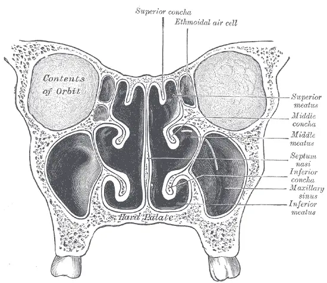

DX.10 — Cancer des fosses nasales ou des sinus
Ce cancer est rare, mais il se cache derrière une obstruction et une épistaxis unilatérales que l'on traite longtemps comme une rhiniteS1. Tout symptôme naso-sinusien qui persiste après trois semaines de traitement médical impose une endoscopie par un ORL (oto-rhino-laryngologiste)S1. Une baisse visuelle, une diplopie ou une hypoesthésie de la face signalent déjà une maladie avancéeS1.
1. Définition
L'ESMO (European Society for Medical Oncology) et EURACAN (réseau européen de référence des cancers solides rares de l'adulte) ont publié une recommandation commune, approuvée en décembre 2024S1. Elle regroupe sous ce nom des tumeurs malignes d'histologie et de comportement variablesS1. Elle couvre les carcinomes, les adénocarcinomes, les neuroblastomes olfactifs et les carcinomes neuroendocrinesS1. Ces tumeurs naissent des fosses nasales, des sinus paranasaux ou de la base du crâne, selon la cinquième classification de l'OMS (Organisation mondiale de la santé)S1. Elle exclut les tumeurs de type salivaire, les tumeurs mésenchymateuses et le mélanome muqueux, qui disposent de recommandations propresS1. Le CHUV (Centre hospitalier universitaire vaudois) précise que ces cancers naissent surtout de la muqueuse qui tapisse les cavités nasales et les sinusS2.
2. Épidémiologie (Suisse, puis Europe)
Le registre européen RARECARENet retient une incidence standardisée inférieure à 10 cas par million d'habitants et par an : 5 à 9 chez l'homme, 2 à 5 chez la femmeS1. Ces tumeurs représentent moins de 5 % des cancers de la tête et du cou, et la plupart des patients ont 65 ans ou plusS1. À l'Inselspital de Berne, 144 patients ont été traités de 2008 à 2019 ; leur âge médian atteignait 61,5 ans et 59,7 % étaient des hommesS4. Les sièges et histologies, les expositions qui créent le risque et la survie expliquent le rang 🚩 E3, car un retard diagnostique transforme une tumeur opérable en tumeur inextirpableS1S6.
Sièges et histologies : Suisse, puis Europe
| Donnée | Valeur | Source |
|---|---|---|
| Série de Berne, 2008–2019 (144 patients) | Le carcinome épidermoïde domine (74 cas, 51 %), devant l'adénocarcinome (24) et le mélanome muqueux (18) ; la fosse nasale est touchée dans 68,1 % des cas. | S4 |
| Série de Berne, adénocarcinome | Les hommes forment 75 % des cas, ce qui reflète l'exposition professionnelle. | S4 |
| Série de Berne, mélanome muqueux | Les femmes forment 66,7 % des cas, et l'âge médian atteint 74,9 ans. | S4 |
| Série de Berne, 2024 (156 patients) | Les hommes forment 62 % des cas, et l'âge médian vaut 64 ans. | S5 |
| Zurich, 30 tumeurs naso-sinusiennes primitives (2018–2020) | On compte 7 adénocarcinomes, 7 carcinomes épidermoïdes, 6 carcinomes indifférenciés, 6 mélanomes et 3 neuroblastomes olfactifs. | S6 |
| Europe, sièges | La fosse nasale vient en tête, puis les sinus maxillaire, ethmoïdal, sphénoïdal et frontal. | S1 |
| Europe, histologies | Les tumeurs épithéliales forment 80 % des cas ; le carcinome épidermoïde en représente 50 à 75 %. | S1 |
| Europe, sexe | Le rapport hommes/femmes varie de 1,3 en Norvège à 2,5 en Italie et en Finlande. | S1 |
Aux Pays-Bas, l'adénocarcinome diminue chez l'homme grâce à la prévention, tandis que le carcinome épidermoïde augmente chez la femme avec le tabagismeS1.
Expositions qui créent le risque
Les expositions professionnelles inhalées dominent le risque, surtout pour l'adénocarcinome : poussières de bois, de textile, de cuir, de farine, de nickel et de chromeS1. La Suva signale en particulier le hêtre, le chêne et certains bois tropicauxS8. Elle classe la poussière de bois au deuxième rang des cancers professionnels, après l'amianteS9.
Chez 31 travailleurs du bois suisses, les micronoyaux des cellules nasales étaient plus fréquents que chez 19 témoins, avec un rapport de cotes de 3,1S10. Ce marqueur traduit une instabilité chromosomique de la muqueuse exposéeS10.
Le tabac favorise surtout le carcinome épidermoïdeS1. Le CHUV ajoute le tabagisme passif, la pollution, le formaldéhyde et l'infection à papillomavirus humain (HPV)S2. À Zurich, 19 patients sur 49 fumaient, mais 6 seulement rapportaient une exposition au bois ; une anamnèse sans exposition ne rassure donc pasS6.
Survie et évolution
| Groupe | Résultat | Source |
|---|---|---|
| Carcinome épidermoïde (Europe, diagnostics 2000–2007) | La survie relative atteint 50 % à 5 ans. | S1 |
| Adénocarcinome (1973–2009) | La survie relative vaut 63,1 %, 47,8 % et 36,6 % à 5, 10 et 15 ans. | S1 |
| Grande série multicentrique (940 + 420 patients) | La survie globale vaut 72,7 % à 5 ans, et la survie sans récidive 66,4 %. | S1 |
| Berne, 156 patients | La survie globale médiane atteint 164 mois, et la survie sans récidive 71,3 mois. | S5 |
| Berne, traitement curatif | Une rechute survient chez 56 patients sur 130 (43,1 %). | S4 |
| Série de 220 patients (survie spécifique à 5 ans) | Elle vaut 78 % pour l'adénocarcinome, 60 % pour le carcinome épidermoïde et 40 % pour le carcinome indifférencié. | S11 |
| Même série, selon le siège | Elle vaut 77 % pour la fosse nasale, 62 % pour le sinus maxillaire et 48 % pour l'ethmoïde. | S11 |
La récidive locale reste la première cause de décès ; c'est pourquoi la marge saine et la surveillance endoscopique décident du pronosticS1. La survie relative est la plus basse en Europe de l'Est, et elle s'améliore depuis 2010S1.
3. Physiopathologie
La compréhension exige d'abord la base à connaître : les voisins des sinus. Une muqueuse exposée aux poussières ou au tabac accumule des altérations génétiques, puis une tumeur apparaît dans une cavité aérienne bordée de lames osseuses finesS1S10. Cette tumeur reste longtemps muette ou banale, ce qui explique le retard : à Zurich, 137 jours séparaient en médiane le premier symptôme du traitementS1S6. Elle obstrue ensuite la fosse nasale et le drainage des sinus, puis elle ulcère la muqueuse qui saigneS2S3. Enfin, elle franchit l'os vers l'orbite, la base du crâne, la fosse infratemporale et les gaines nerveusesS1. Les types histologiques gouvernent l'agressivité, et le tableau de corrélation relie chaque lésion à l'examen et au traitement.
Base à connaître : les voisins des sinus
La coupe frontale montre les fosses nasales et les sinus. La planche anatomique présente une coupe frontale vue de face

Lisez d'abord seul ce cliché (la coupe frontale montre les fosses nasales et les sinus) : cherchez vous-même le signe.
La copie annotée (la coupe frontale montre les fosses nasales et les sinus) indique les repères décrits ci-dessous.
- Le contenu de l’orbite se situe au-dessus du sinus maxillaire.S15
- Une paroi très mince sépare les cellules ethmoïdales de l’orbite.S15
- Le toit de la fosse nasale se situe sous la base du crâne.S15
- Le sinus maxillaire constitue une grande cavité d’air, longtemps muette.S15
- Le palais dur constitue le plancher de la fosse nasale.S15
- La cloison sépare deux fosses : une tumeur saigne et obstrue d’un seul côté.
- La paroi ethmoïdo-orbitaire est si fine qu’une diplopie peut être le premier signe.
Ce que l'image décide. Tout symptôme unilatéral persistant impose l’endoscopie, puis l’imagerie avant la biopsie.

La coupe frontale montre que les cellules ethmoïdales séparent la fosse nasale de l'orbite par une paroi très minceS15. Le sinus maxillaire remplit le corps du maxillaire, sous l'orbite et au-dessus du palais durS15. Une tumeur ethmoïdale gagne donc vite l'orbite ou la base du crâne, tandis qu'une tumeur maxillaire peut envahir la cavité buccale ou la fosse infratemporaleS1S15.
Le périoste de l'orbite et de la base du crâne constitue la barrière la plus efficace contre l'extensionS1. L'IRM (imagerie par résonance magnétique) le montre mieux que la TDM (tomodensitométrie), qui décrit en revanche les fines lames osseusesS1.
Le sinus est une cavité d'air : la tumeur y grandit sans gêne, d'où des symptômes absents ou vagues pendant des moisS1S6. Elle ne touche qu'une fosse nasale, si bien que l'obstruction et le saignement restent du même côtéS1S3.
La lymphe atteint les ganglions sous-mandibulaires (niveau I) et jugulo-digastriques (niveau II), ces derniers par les ganglions rétropharyngésS1. Dans les formes étendues, les ganglions rétropharyngés sont touchés les premiers ; seule l'imagerie en coupe les exploreS1.
Types histologiques et conséquences
| Type | Ce qui le définit | Conséquence |
|---|---|---|
| Carcinome épidermoïde kératinisant ou non | Le HPV à haut risque est actif dans 35 à 50 % des formes non kératinisantes ; la tumeur peut naître d'un papillome inversé. | Le papillome inversé exige une exérèse complète et une histologie entière.S1 |
| Carcinome multiphénotypique lié au HPV | Il associe plusieurs différenciations et se lie surtout au HPV de type 33. | Son aspect paraît agressif, mais son évolution reste favorable.S1 |
| Adénocarcinome de type intestinal ou non intestinal | Il ressemble à l'adénocarcinome digestif ; le type non intestinal reste un diagnostic d'exclusion. | Il se lie aux poussières professionnelles.S1 |
| Carcinome naso-sinusien indifférencié | Il ne montre aucune différenciation et reste un diagnostic d'exclusion ; une mutation IDH2 peut le porter. | Il se prête à une chimiothérapie néoadjuvante.S1 |
| Carcinome NUT | Un réarrangement du gène NUTM1, souvent avec BRD4, le définit ; le marquage nucléaire NUT le confirme. | Il évolue très vite.S1S5 |
| Carcinomes déficients en SWI/SNF | Les cellules perdent l'expression de SMARCB1 ou de SMARCA4. | Ils sont rares et très agressifs.S1 |
| Neuroblastome olfactif | Il naît du toit de la fosse nasale. | Il peut récidiver après 10 à 15 ans.S1 |
Les erreurs diagnostiques ne sont pas rares, car ces tumeurs sont rares et hétérogènes ; une seconde lecture dans un centre à fort volume peut changer le traitementS1.
Corrélation : perturbation, exploration, thérapeutique
| Perturbation | Exploration qui la montre | Thérapeutique qui la corrige (mécanisme) |
|---|---|---|
| La masse obstrue et saigne. | L'endoscopie la localise et guide la biopsie. | L'exérèse complète retire la source du saignement.S1 |
| La tumeur lyse les lames osseuses. | La TDM montre les lames fines de l'orbite et de la base du crâne. | La chirurgie vise des marges saines.S1 |
| Elle franchit le périoste ou la dure-mère. | L'IRM montre le périoste et le rehaussement dural. | Ces extensions décident de la résécabilité et des volumes de radiothérapie.S1 |
| Elle suit les nerfs. | L'IRM montre le nerf épaissi et rehaussé. | Les examens extemporanés suivent les marges le long des nerfs.S1 |
| Un clone de haut grade prolifère vite. | L'histologie et la biologie moléculaire le classent. | La chimiothérapie néoadjuvante réduit la masse et sélectionne les répondeurs.S1 |
| Une altération ciblable existe. | Le profil moléculaire recherche MSI, NTRK, RET, BRAF V600E et FGFR. | Une thérapie ciblée indépendante du siège devient possible.S1 |
4. Démarche diagnostique
Dans la situation « épistaxis », le médecin écarte d'abord un saignement sous antithrombotique (DX.2, 🚩 E1) et un purpura thrombopénique immunologique (DX.6, 🚩 E2). Il cherche ensuite une lésion structurale lorsque l'obstruction et le saignement restent du même côté. Il distingue alors la tumeur maligne des lésions qui l'imitent. La règle qui tranche reste simple : un symptôme naso-sinusien qui persiste après un traitement médical de trois semaines au plus impose une endoscopie ORLS1. Une neuropathie crânienne signe déjà une maladie avancée ; elle supprime toute attenteS1.
Lésions qui imitent le cancer naso-sinusien
| Diagnostic | Élément qui tranche | Piège | Conduite si positif |
|---|---|---|---|
| Angiofibrome nasopharyngien juvénile (DX.9) | Une masse très vascularisée apparaît chez un adolescent. | Une biopsie au cabinet provoque une hémorragie. | L'imagerie précède tout prélèvement.S1 |
| Papillome inversé | L'histologie complète le distingue. | Un carcinome épidermoïde synchrone ou métachrone peut s'y cacher. | L'exérèse complète et la surveillance s'imposent.S1 |
| Mélanome muqueux | L'histologie le reconnaît ; il touche surtout des femmes âgées. | La recommandation ESMO–EURACAN ne le couvre pas. | Une recommandation dédiée s'applique.S1S4 |
| Corps étranger (DX.4) ou perforation septale (DX.5) | L'endoscopie voit l'objet ou la perforation. | Une croûte ou un granulome masque une tumeur. | La biopsie s'impose si la lésion persiste. |
| Rhinosinusite | Les symptômes cèdent au traitement médical. | La persistance au-delà de trois semaines n'est plus une rhinite banale. | L'endoscopie ORL s'impose.S1 |
5. Anamnèse ciblée et drapeaux rouges
L'anamnèse précise la latéralité, la durée et la progression, car un symptôme unilatéral qui persiste malgré le traitement oriente vers une lésion structuraleS1. Chaque symptôme a sa signature topographique, et chaque drapeau rouge impose une action. Le médecin relève ensuite le métier, sa durée, les protections portées, le tabac et l'état généralS1S2. Il note enfin les antithrombotiques, qui aggravent le saignement sans en expliquer la cause (DX.2).
Symptômes : caractère, typicité et raison
| Symptôme | Caractérisation | Typique ? Pourquoi | Source |
|---|---|---|---|
| Obstruction nasale | Elle est unilatérale, chronique et progressive ; 29 patients zurichois sur 49 la signalaient. | Elle est typique, car la masse comble la fosse nasale. | S3S6 |
| Épistaxis | Elle est unilatérale et récidivante ; 28 patients sur 49 la signalaient. | Elle est typique, car la tumeur ulcère la muqueuse. | S3S6 |
| Rhinorrhée | Elle reste unilatérale et persistante. | Elle est typique lorsqu'elle accompagne une obstruction homolatérale. | S1S2 |
| Douleur faciale ou dentaire | Elle touchait 18 patients sur 49, dont 12 au stade IV. | Elle est tardive, car elle traduit une extension. | S1S6 |
| Hyposmie | Elle touchait 5 patients sur 49. | Elle reste peu spécifique. | S2S6 |
| Diplopie, baisse visuelle, larmoiement | La diplopie touchait 4 patients sur 49. | Elle est atypique au début, car elle signe l'atteinte de l'orbite ou des voies lacrymales. | S1S2S6 |
| Engourdissement de la joue | Il siège dans le territoire trigéminal. | Il est tardif, car il signe une neuropathie crânienne. | S1S2 |
| Oreille bouchée, limitation de l'ouverture buccale | Elles s'installent progressivement. | Elles sont tardives et traduisent une extension postérieure. | S1S2 |
| Masse cervicale, déformation de la face | Elles apparaissent en dernier. | Elles sont tardives et signent une maladie étendue. | S2S3 |
À Zurich, le stade ne modifiait pas significativement la répartition des symptômes ; un tableau discret n'exclut donc pas une tumeur avancéeS6.
Drapeaux rouges et action immédiate
| Drapeau rouge | Signification | Action immédiate |
|---|---|---|
| Baisse visuelle, diplopie, limitation oculomotrice | L'orbite est atteinte et la maladie est avancée. | L'imagerie en coupe et l'avis ORL se font sans attendre trois semaines.S1 |
| Hypoesthésie trigéminale | Une extension nerveuse est probable. | L'IRM cherche une extension périneurale.S1 |
| Épistaxis abondante ou récidivante unilatérale | La tumeur ulcérée saigne. | L'hémostase suit le cours de la situation, puis l'endoscopie cherche la source.S1 |
| Céphalée, fièvre ou raideur de nuque après chirurgie de la base du crâne | La plastie durale peut être déhiscente ou nécrosée. | Le patient est réadressé en urgence à l'équipe opératoire.S1 |
| Masse cervicale | Une métastase ganglionnaire est possible. | L'échographie guide une cytoponction.S4S6 |
| Symptôme unilatéral persistant au-delà de trois semaines | Une lésion structurale est possible. | L'endoscopie ORL s'impose.S1 |
6. Examen physique ciblé, région par région
L'examen suit l'ordre des gestes chez un patient qui saigne ou se plaint d'obstruction. Chaque région ouvre une fenêtre qui décrit le signe, le geste et son aspect.
- Le médecin apprécie d'abord l'état général et le retentissement du saignement.
- Il inspecte ensuite la face et la pyramide nasale.
- Il réalise la rhinoscopie antérieure, puis l'endoscopie nasale par l'ORL.
- Il examine l'orbite et la vision, puis la sensibilité de la face.
- Il termine par la cavité buccale et le cou.
État général et retentissement du saignement
Le médecin cherche d'abord une hémorragie mal tolérée, car elle passe avant tout bilan étiologique ; la conduite d'hémostase figure dans le cours de la situation « épistaxis ». Il note ensuite l'amaigrissement et la fatigue, qui pèsent sur la décision thérapeutiqueS1.
Le piège consiste à clore la consultation après l'arrêt du saignement, alors que l'unilatéralité récidivante impose une recherche de causeS1.
Face et pyramide nasale
Normalement, la face reste symétrique et la peau du nez est souple. Le médecin regarde la face de profil et d'en haut, puis il palpe les os propres et les tissus prémaxillairesS1. Une déformation du milieu de la face signe une tumeur étendueS3. Les os propres du nez et les tissus prémaxillaires figurent parmi les extensions que l'imagerie doit décrireS1.
Rhinoscopie antérieure
Le spéculum montre le vestibule, la cloison antérieure et la tête du cornet inférieur, que la coupe anatomique situe au-dessus du plancher nasalS15. Une masse friable, une ulcération ou un saignement unilatéral oriente vers une lésion structuraleS3.
Le piège tient à la portée du geste : la rhinoscopie ne voit pas l'ethmoïde ni le toit de la fosse nasale, d'où l'endoscopie obligatoireS1.
Endoscopie nasale
L'endoscopie est nécessaire pour localiser la tumeur, guider la biopsie et apprécier son extension localeS1. L'ORL passe l'optique le long du plancher, puis du méat moyen, jusqu'au toit et à la choane. Normalement, il voit la cloison, les cornets inférieur et moyen et leurs méatsS15.
Chez 965 nasofibroscopies de travailleurs du bois, la fente olfactive restait visible dans 72 % des cas, et les effets indésirables mineurs touchaient 30 % des examensS16. Ce chiffre rappelle qu'une endoscopie normale n'explore jamais tout le toitS16.
La biopsie se fait au cabinet ou en chirurgie ambulatoire, selon le risque hémorragique et les extensions critiquesS1. Elle suit l'imagerie, sauf si la tumeur s'extériorise, par exemple dans la boucheS1.
Orbite et vision
Le médecin mesure l'acuité visuelle, teste les mouvements oculaires dans les neuf directions du regard et cherche une diplopie. Une limitation oculomotrice ou une baisse visuelle signe une maladie avancéeS1. Un larmoiement unilatéral évoque une atteinte des voies lacrymales, que l'imagerie doit préciserS1S2.
Le piège consiste à attribuer un larmoiement à une conjonctivite chez un patient qui saigne du même côtéS2.
Sensibilité de la face
Le médecin recherche une asymétrie de la sensibilité au toucher des deux joues, de la lèvre supérieure et des gencives. Une hypoesthésie trigéminale fait partie des neuropathies crâniennes qui signent une maladie avancéeS1. Elle oriente vers une extension périneurale, que l'IRM rechercheS1.
Cavité buccale
Le médecin inspecte et palpe le palais et le vestibule supérieur, puis il mesure l'ouverture buccale. Une tumeur maxillaire peut bourgeonner dans la cavité buccale ; la biopsie se fait alors directement par la boucheS1. Une ouverture buccale limitée fait suspecter une atteinte de la fosse infratemporale, l'espace des muscles masticateursS1S2.
Cou
Le médecin recherche par la palpation une adénopathie aux niveaux sous-mandibulaires et jugulo-carotidiens des deux côtésS1. Les métastases ganglionnaires restent rares tant que la tumeur reste confinée aux sinusS1. À Berne, 13,8 % des patients étaient classés cN+ au départ, mais l'histologie n'en confirmait que septS4.
Une adénopathie suspecte conduit à une échographie avec cytoponction à l'aiguille fineS4S6.
7. Approche syndromique
Le tableau se lit en cinq syndromes, du plus précoce au plus tardif ; chaque signe défini ouvre son geste et son mécanisme.
| Syndrome | Signes fonctionnels | Signes physiques |
|---|---|---|
| 7.1 Syndrome naso-sinusien unilatéral | Obstruction, rhinorrhée et épistaxis du même côté. | Une masse saigne au contact de l'endoscope.S1S3 |
| 7.2 Syndrome orbitaire | Diplopie, baisse visuelle ou larmoiement. | La motilité oculaire est limitée et l'acuité baisse.S1S2 |
| 7.3 Syndrome neurologique | La joue s'engourdit et la douleur s'installe. | La sensibilité trigéminale diminue.S1S6 |
| 7.4 Syndrome buccal et infratemporal | La douleur dentaire et la gêne à l'ouverture apparaissent. | Une masse palatine ou un trismus apparaît.S1S2 |
| 7.5 Syndrome ganglionnaire | Une masse du cou est perçue. | Une adénopathie ferme se palpe.S2S4 |
Signes : définition, geste, mécanisme
| Signe | Définition | Geste de recherche | Mécanisme |
|---|---|---|---|
| Obstruction unilatérale | L'air ne passe plus d'un seul côté. | Le médecin teste chaque narine, puis l'endoscopie confirme. | La masse occupe la fosse nasale.S1 |
| Diplopie | Le patient voit double. | Le médecin teste les mouvements oculaires dans toutes les directions. | La tumeur envahit l'orbite et gêne un muscle oculomoteur.S1 |
| Hypoesthésie trigéminale | La sensibilité de la face diminue. | Le médecin compare le toucher des deux joues. | La tumeur suit ou comprime un nerf.S1 |
| Trismus | La bouche s'ouvre mal. | Le médecin mesure l'ouverture buccale. | La tumeur gagne l'espace masticateur.S1 |
| Larmoiement | Les larmes coulent sans pleurs. | Le médecin observe l'œil du côté atteint. | La voie lacrymale est obstruée.S1S2 |
8. Diagnostic positif et critères
Le diagnostic exige l'histologie, complétée par l'immunohistochimie et la biologie moléculaire ; l'imagerie seule ne suffit jamaisS1. La recommandation ESMO–EURACAN de 2025 fixe des critères de diagnostic qui portent sur le délai, l'imagerie, l'histologie et l'expertiseS1. Le stade suit la classification TNM (tumeur, ganglion, métastase) de l'UICC (Union internationale contre le cancer), huitième édition, dont les repères d'extension décident du traitementS1.
Critères de diagnostic (ESMO–EURACAN 2025)
| Critère | Exigence | Ce qui ne suffit pas |
|---|---|---|
| Délai | Un symptôme persistant trois semaines conduit rapidement à un examen ORL complet avec endoscopie. | Un traitement d'épreuve prolongé ne suffit pas.S1 |
| Preuve | L'imagerie et l'histologie confirment le diagnostic, avec immunohistochimie et biologie moléculaire. | L'aspect endoscopique ou radiologique ne suffit pas.S1 |
| Expertise | Un pathologiste entraîné d'un centre à fort volume lit les tumeurs de haut grade. | Une lecture isolée d'une tumeur peu différenciée ne suffit pas.S1 |
| Sous-type | L'analyse moléculaire définit le sous-type histologique. | Le seul terme de « carcinome peu différencié » ne suffit pas.S1 |
| Extension | L'imagerie décrit chaque extension critique et sépare tumeur et inflammation. | Une opacité sinusienne ne mesure pas la tumeur.S1 |
Repères d'extension et résécabilité
| Extension | Catégorie | Source |
|---|---|---|
| Parois osseuses de l'orbite ; base du crâne antérieure osseuse | T3 | S1 |
| Contenu de l'orbite ; apophyses ptérygoïdes ; fosse ptérygopalatine ou infratemporale pour le sinus maxillaire | T4a | S1 |
| Dure-mère ; cerveau | T4b | S1 |
Une tumeur est jugée inextirpable si elle touche l'apex orbitaire, le sinus caverneux ou le chiasma optiqueS1. Il en va de même si elle engaine la carotide interne, envahit massivement le cerveau avec œdème ou atteint un gros vaisseauS1.
À Berne, 23,6 % des tumeurs étaient classées T4a et 16 % T4b ; 86,1 % ne montraient aucune atteinte ganglionnaire, et 4,9 % avaient des métastasesS4. Dans une série de 220 patients, la survie spécifique à 5 ans passait de 91 % pour T1 à 49 % pour T4S11. L'atteinte de la fosse ptérygomaxillaire et de la dure-mère restait péjorative en analyse multivariéeS11.
9. Examens complémentaires
9.a — Référence. L'histologie expertisée reste l'examen de référence, après une imagerie qui planifie la biopsieS1.
9.b — Première intention. L'endoscopie avec biopsie précède la cartographie par l'IRM et la TDM, qui mesurent l'extensionS1.
9.c — Alternatives. Si l'IRM est impossible, la TDM injectée explore aussi l'extension locale et les ganglions ; l'échographie cervicale complète le couS1.
9.d — Deuxième intention. La TEP-TDM au FDG recherche les métastases des tumeurs de haut grade, puis le bilan avant chimiothérapie vérifie la toléranceS1. Le tableau d'interprétation indique la conduite qui suit chaque résultat.
Endoscopie et biopsie
L'endoscopie localise la tumeur, guide la biopsie et apprécie son extensionS1. Les sinus maxillaire, ethmoïdal et frontal se biopsient par voie transnasale sous contrôle endoscopique, sauf extension externeS1. Le prélèvement se fait sous anesthésie locale ou générale, selon le casS3. À Zurich, la biopsie et l'exploration se faisaient sous anesthésie généraleS6.
Le piège consiste à biopsier une masse avant l'imagerie, car une tumeur vasculaire ou une extension critique change le cadre du gesteS1.
IRM de la face et de la base du crâne
L'IRM est l'examen de choix pour l'extension locale et périneurale ; le périoste y apparaît comme une couche hypo-intense homogèneS1. Elle exclut l'invasion du contenu orbitaire avec une valeur prédictive négative supérieure à 93 %S1. Sa précision reste inférieure à 80 % pour la périorbite et le compartiment intraconiqueS1.
Elle prédit l'invasion de la dure-mère avec une valeur prédictive positive supérieure à 85 %, mais sa valeur prédictive négative ne dépasse pas 82 %S1. Un œdème cérébral peut venir de l'effet de masse et ne prouve pas l'invasion du parenchymeS1.
Le nerf atteint s'épaissit et se rehausse ; la sensibilité atteint au plus 95 %, mais la cartographie n'est complète que dans 60 % des casS1.
TDM du massif facial
La TDM multibarrette montre très bien les fines lames osseuses de l'orbite et de la base du crâneS1. Pour la base du crâne antérieure osseuse, sa valeur prédictive positive atteint 77,8 %, contre 88,9 % pour l'IRMS1.
Le compte rendu sépare la tumeur des modifications inflammatoires, car un sinus bloqué derrière la masse se remplit de sécrétionsS1.
Échographie cervicale et cytoponction
L'échographie montre les ganglions du cou, comme l'IRM ou la TDM injectéeS1. À Berne, une adénopathie suspecte recevait une cytoponction à l'aiguille fine, et une cytologie maligne conduisait au traitement du couS4.
Chez les carcinomes épidermoïdes naso-sinusiens, les métastases ganglionnaires touchent 14 % des patients, avec des extrêmes de 4 à 27 % selon le siège et l'extensionS1.
TEP-TDM au FDG
Sa valeur prédictive négative dépasse 90 % pour les ganglions, mais ses faux positifs restent nombreuxS1. Son apport principal tient aux métastases à distance et aux seconds cancersS1. Les métastases à distance restent rares au diagnostic et touchent surtout le poumon, le foie et l'osS1.
Elle ne sert pas à la surveillance de routine, car ses faux positifs sont fréquents juste après le traitementS1.
Histologie, immunohistochimie, biologie moléculaire
Le pathologiste combine l'aspect morphologique, l'immunohistochimie et la biologie moléculaire, car plusieurs sous-types se définissent par une altération préciseS1. Le marquage nucléaire NUT confirme le carcinome NUT, et la perte de SMARCB1 ou de SMARCA4 définit les tumeurs déficientes en SWI/SNFS1.
La recherche de MSI élevée, de fusions NTRK, RET ou FGFR et de mutation BRAF V600E ouvre l'accès à une thérapie cibléeS1.
Bilan avant chimiothérapie
| Examen | Seuil ou raison | Source |
|---|---|---|
| Formule sanguine | Le docétaxel ne se donne que si les neutrophiles atteignent au moins 1500 par mm³. | S13 |
| Créatinine et ionogramme | Une atteinte rénale contre-indique le cisplatine, qui impose aussi une diurèse de 100 à 150 mL/h. | S12 |
| Audition | Un trouble sévère de l'ouïe contre-indique le cisplatine. | S12 |
| Activité de la DPD | L'AIPS recommande un phénotype ou un génotype avant le fluorouracile ; un uracile d'au moins 150 ng/mL signe un déficit complet. | S14 |
| Fonction hépatique | Une insuffisance hépatique sévère contre-indique le docétaxel. | S13 |
| Test de grossesse et contraception | Le cisplatine et le docétaxel sont contre-indiqués pendant la grossesse. | S12S13 |
Interprétation : résultat, signification, conduite
| Résultat | Signification | Conduite |
|---|---|---|
| Masse unilatérale à l'endoscopie | Une tumeur est probable. | L'IRM précède la biopsie.S1 |
| Lyse de la lame papyracée sans atteinte de la graisse | La tumeur atteint la paroi orbitaire (T3). | L'orbite reste préservable.S1 |
| Graisse extraconique envahie | Le contenu de l'orbite est atteint (T4a). | La décision se prend en réunion multidisciplinaire.S1 |
| Rehaussement nodulaire de la dure-mère | La dure-mère est probablement envahie (T4b). | L'équipe discute la résection de la base du crâne.S1 |
| Apex orbitaire ou carotide interne engainée | La tumeur est inextirpable. | Une radiothérapie définitive, avec ou sans traitement systémique, s'impose.S1 |
| Carcinome de haut grade | La tumeur est chimiosensible. | Une chimiothérapie néoadjuvante se discute.S1 |
10. Arbre décisionnel
- Si l'épistaxis menace l'hémodynamique, l'hémostase précède tout bilan et suit le cours de la situation « épistaxis ».
- Si un antithrombotique ou un purpura explique le saignement, le médecin traite d'abord DX.2 ou DX.6.
- Si une baisse visuelle, une diplopie ou une hypoesthésie apparaît, l'imagerie et l'avis ORL se font sans délaiS1.
- Si un symptôme unilatéral persiste trois semaines malgré le traitement, l'ORL pratique une endoscopieS1.
- Si l'histologie confirme un cancer, la réunion multidisciplinaire fixe la stratégieS1. Elle tient compte du type, du grade et de l'extensionS1.
- Si la tumeur est de haut grade, une chimiothérapie néoadjuvante se discute, avec une réévaluation après deux cycles au plusS1.
- Si l'exérèse complète paraît faisable, la chirurgie précède la radiothérapie adjuvante selon les facteurs de risqueS1.
- Si la tumeur est inextirpable, une radiothérapie définitive, avec ou sans traitement systémique, s'imposeS1.
11. Prise en charge selon les recommandations suisses
11.A — But. Le traitement vise une exérèse en marges saines, car la marge reste le principal facteur pronostique, puis le contrôle local qui évite la première cause de décèsS1. Après radiothérapie postopératoire, le contrôle local attendu atteint environ 80 % à 2 ans et 50 à 70 % à 5 ansS1.
11.B — Moyens. Une épistaxis abondante, une atteinte de l'orbite ou une complication de la base du crâne relève de l'urgence — conduite chronologique. La décision appartient à une réunion multidisciplinaire d'un centre à fort volume, qui réunit ORL, oncologues, radiologue et pathologisteS1. Les centres visent un début de traitement dans les 4 à 6 semaines suivant le diagnosticS6. L'ordre du traitement dépend du type, du grade et de l'extensionS1.
La chirurgie et la radiothérapie forment le socle ; la chimiothérapie s'y ajoute dans les tumeurs de haut gradeS1. Le tableau des médicaments précède les fiches du cisplatine, du docétaxel et du fluorouracile. Les situations spéciales et le volet social et assurances complètent la décision.
11.C — Surveillance. Le calendrier de surveillance associe endoscopie et IRM, car l'IRM détecte mieux la récidive localeS1.
11.D — Pronostic et sortie. Le pronostic, les critères de guérison et les critères de sortie se fixent dès la fin du traitementS1.
Urgence — conduite chronologique
| Délai | Situation | Geste et délai maximal | Ce qu'il faut prévoir |
|---|---|---|---|
| Minutes | Épistaxis abondante d'une masse | L'hémostase suit le cours de la situation ; aucune biopsie improvisée ne se fait avant l'imagerie.S1 | Une récidive est attendue tant que la tumeur reste en place. |
| Heures | Baisse visuelle, diplopie, hypoesthésie | L'imagerie en coupe et l'avis ORL se font sans attendre le délai de trois semaines.S1 | L'atteinte de l'apex orbitaire rend la tumeur inextirpable.S1 |
| Heures | Signes méningés après chirurgie de la base du crâne | Le patient retourne en urgence vers l'équipe opératoire.S1 | Une déhiscence ou une nécrose de la plastie durale est possible.S1 |
| Jours | Fièvre sous chimiothérapie TPF | La formule sanguine se contrôle aussitôt, car la neutropénie atteint son nadir vers le septième jour.S13 | Le G-CSF prophylactique réduit le risque ; les patients des études recevaient une antibioprophylaxie.S13 |
| Semaines | Diagnostic histologique posé | Le traitement commence dans les 4 à 6 semaines.S6 | Une réévaluation par imagerie suit au plus tard le deuxième cycle néoadjuvant.S1 |
Le piège qui fait perdre du temps est la biopsie au cabinet d'une masse non imagée, car une hémorragie ou une extension critique impose un autre cadreS1.
Ordre du traitement
La chimiothérapie néoadjuvante se considère dans les tumeurs de haut grade : carcinome épidermoïde, carcinome indifférencié, carcinomes neuroendocrines, neuroblastome olfactif de haut grade, carcinome NUT et tumeurs déficientes en SWI/SNFS1. Si la tumeur répond partiellement ou complètement, une radiochimiothérapie définitive peut suivre ; si elle reste stable ou progresse, la chirurgie prend le relaisS1.
Dans les tumeurs de bas grade, la chirurgie en marges saines vient en première ligneS1. La radiothérapie postopératoire suit pour les tumeurs pT3–pT4, les marges positives, l'invasion périneurale, l'atteinte ganglionnaire ou le haut gradeS1. Elle n'est pas recommandée pour une tumeur pT1 de bas grade limitée à l'infrastructure, avec marges sainesS1.
Une radiochimiothérapie postopératoire à base de sel de platine se discute dans les tumeurs de haut gradeS1. La récidive locale ou régionale relève d'abord de la chirurgie, puis d'une réirradiation si la chirurgie est impossibleS1.
Chirurgie
La chirurgie n'est indiquée que si l'exérèse complète paraît faisable, car les exérèses partielles n'apportent aucun bénéficeS1. La chirurgie endoscopique transnasale est devenue le traitement de choix de la plupart des tumeurs naso-ethmoïdales, mais seule une minorité de tumeurs maxillaires s'y prêteS1. Des prélèvements extemporanés en périphérie suivent l'extension le long des nerfs et du périosteS1.
À Berne, la chirurgie était le premier traitement de 73 % des patients traités à visée curative, et 30 % subissaient une chirurgie étendueS5. Aucun événement n'était noté dans les 30 jours chez 84 % des opérésS5. La cavité opératoire reste méchée au moins 48 heures pour prévenir le saignementS1.
Radiothérapie
La radiothérapie conformationnelle avec modulation d'intensité (RCMI) est le standard, en définitif comme en postopératoireS1. La protonthérapie se propose lorsque la répartition de dose protège mieux les organes à risque ; les ions carbone visent les histologies radiorésistantes non opéréesS1.
À Berne, 97 % des patients irradiés recevaient une RCMI et 19 % une protonthérapieS5. La radiodermite touchait 80,6 % des irradiés et la mucite 72,1 %, mais une seule toxicité aiguë dépassait le grade 3S5.
Médicaments : doses AIPS et contre-indications
| Molécule ® | Dose AIPS | Voie et durée | Contre-indication majeure |
|---|---|---|---|
| Docétaxel (Taxotere®, n° 53262)S13 | Le schéma TPF d'induction suivi de radiothérapie donne 75 mg/m² de docétaxel et 75 mg/m² de cisplatine le premier jour.S13 | Le fluorouracile suit à 750 mg/m² par jour pendant 5 jours, toutes les 3 semaines, sur 4 cycles.S13 | Neutrophiles inférieurs à 1500/mm³, grossesse, allaitement. |
| Cisplatine (Cisplatine Sandoz®, n° 51077)S12 | La monothérapie usuelle donne 50 à 100 mg/m² en dose unique ou 15 à 20 mg/m² par jour pendant 5 jours.S12 | Une interruption de 4 semaines suit chaque cycle.S12 | Atteinte rénale, surdité sévère, grossesse, allaitement. |
| Fluorouracile (Fluorouracil Accord®, n° 66825)S14 | L'AIPS donne 300 à 600 mg/m² par jour, sans dépasser 1 g par jour.S14 | La perfusion se fait en bolus lent ou sur 24 heures.S14 | Déficit complet en DPD, brivudine, allaitement. |
La recommandation européenne, hors AIPS, indique pour le schéma TPF 75 mg/m² de docétaxel, 80 mg/m² de cisplatine et 800 mg/m² de fluorouracile par jour pendant 4 joursS1. La conduite enseignée suit l'AIPS du Taxotere, qui fixe le schéma ORL, et la recommandation précise que les doses varient selon les centresS13S1.
Cisplatine — Cisplatine Sandoz®
| Indication | Le cisplatine s'emploie en traitement combiné du carcinome épidermoïde de la sphère ORL, après résection ou radiothérapie.S12 |
|---|---|
| Dose AIPS | La monothérapie usuelle donne 50 à 100 mg/m² en dose unique ou 15 à 20 mg/m² par jour pendant 5 jours, suivis de 4 semaines d'interruption.S12 |
| Hydratation | Le patient reçoit 2 litres en préhydratation, puis 2,5 L/m² sur 24 heures, pour maintenir une diurèse de 100 à 150 mL/h.S12 |
| Contre-indications | L'hypersensibilité aux dérivés du platine, la myélosuppression, l'atteinte rénale, l'exsiccose, la surdité sévère et l'insuffisance hépatique sévère le contre-indiquent.S12 |
| Grossesse et allaitement | Il est contre-indiqué pendant la grossesse et l'allaitement ; la contraception dure 7 mois après traitement chez la femme et 4 mois chez l'homme.S12 |
| Sujet âgé et enfant | L'AIPS ne rapporte aucune expérience chez la personne âgée et renvoie à la littérature pour l'enfant.S12 |
| Interactions | Le vaccin contre la fièvre jaune et la phénytoïne prophylactique sont contre-indiqués avec lui.S12 |
Docétaxel — Taxotere®
| Indication | Le docétaxel s'associe au cisplatine et au fluorouracile en induction des carcinomes épidermoïdes ORL localement avancés.S13 |
|---|---|
| Dose AIPS | Avant radiothérapie, il se donne à 75 mg/m² le premier jour, toutes les 3 semaines, sur 4 cycles ; avant radiochimiothérapie, le cisplatine passe à 100 mg/m², sur 3 cycles.S13 |
| Prémédication | La dexaméthasone orale à 16 mg par jour pendant 3 jours, dès la veille, réduit la rétention hydrique et l'hypersensibilité.S13 |
| Contre-indications | Une hypersensibilité sévère aux taxoïdes, des neutrophiles inférieurs à 1500/mm³ et une insuffisance hépatique sévère le contre-indiquent.S13 |
| Grossesse et allaitement | Il est contre-indiqué pendant la grossesse et l'allaitement ; la contraception dure 2 mois après traitement chez la femme et 4 mois chez l'homme.S13 |
| Sujet âgé | La dose ne change pas, mais les effets indésirables du schéma TPF imposent une surveillance étroite.S13 |
| Effet attendu | La neutropénie domine ; son nadir survient vers le septième jour et dure en moyenne 7 jours.S13 |
Fluorouracile — Fluorouracil Accord®
| Indication | L'AIPS vise les tumeurs digestives, mammaires, gynécologiques et vésicales ; l'usage ORL repose sur l'AIPS du Taxotere.S14S13 |
|---|---|
| Dose AIPS | La dose usuelle va de 300 à 600 mg/m² par jour, sans dépasser 1 g par jour.S14 |
| Contre-indications | La myélosuppression, l'insuffisance hépatique sévère, une infection sévère, la brivudine et un déficit complet en DPD le contre-indiquent.S14 |
| Dépistage de la DPD | Le déficit complet touche 0,01 à 0,5 % des personnes caucasiennes, et le déficit partiel 3 à 9 %.S14 |
| Grossesse et allaitement | Il ne s'utilise pendant la grossesse que sans alternative ni report possible ; l'allaitement est contre-indiqué.S14 |
| Contraception | Une contraception efficace se poursuit au moins 6 mois après le traitement.S14 |
Situations spéciales
Chez la femme enceinte, le cisplatine et le docétaxel sont contre-indiqués ; la décision oncologique se prend donc avec l'équipe obstétricaleS12S13. L'allaitement est proscrit sous cisplatine, docétaxel et fluorouracileS12S13S14.
Chez le sujet âgé, l'AIPS du cisplatine ne rapporte aucune expérience, et celle du docétaxel impose une surveillance rapprochée du schéma TPFS12S13. À Berne, l'âge restait associé à une survie globale plus courteS5.
Une atteinte rénale contre-indique le cisplatine, et une insuffisance hépatique sévère contre-indique le docétaxel et le fluorouracileS12S13S14. Une insuffisance rénale modérée ou sévère fausse aussi le dosage d'uracile qui dépiste le déficit en DPDS14.
Volet social et assurances
Le métier et la durée d'exposition se documentent dès l'anamnèse, car la poussière de bois est la deuxième cause de cancer professionnel après l'amianteS9. La Suva reçoit les annonces de maladie professionnelle ; elle en enregistre environ 180 par an dans la seule branche forestièreS9.
Le patient bénéficie d'un soutien psychologique, nutritionnel et logopédique, et il est orienté vers les associations de patientsS1.
Calendrier de surveillance
| Période | Rythme | Contenu |
|---|---|---|
| Après traitement | Le bilan de référence se fait 3 à 4 mois après la fin du traitement. | L'endoscopie et l'IRM servent de base de comparaison.S1 |
| Première année | La consultation revient tous les 3 mois. | L'ORL nettoie la cavité et cherche une récidive.S1 |
| Deuxième année | La consultation revient tous les 3 à 6 mois. | L'examen reste endoscopique.S1 |
| Troisième et quatrième années | La consultation revient tous les 6 à 8 mois. | L'IRM se répète tous les 6 mois pendant 3 ans pour les tumeurs T2 à T4.S1 |
| Ensuite | La consultation devient annuelle. | La fonction thyroïdienne se contrôle une ou deux fois par an.S1 |
Environ 75 % des patients présentent une atteinte de la fonction orbitaire ou de la vision qui requiert un ophtalmologueS1. Une perte auditive justifie souvent un audiologiste, et l'irradiation impose de surveiller la fonction hypophysaireS1. Les lavages nasaux et le débridement périodique de la cavité préviennent les croûtesS1.
Pronostic, guérison et sortie
La plupart des récidives surviennent dans les 2 à 5 ans, mais un neuroblastome olfactif peut récidiver après 10 à 15 ansS1. Après chirurgie et radiothérapie, la récidive locale ou régionale touche 40 à 80 % des patients selon l'histologieS1. Pour le carcinome épidermoïde, la survie globale atteignait 92,5 % dans les formes précoces contre 71,1 % dans les formes avancéesS7.
La morbidité tardive persiste : à Berne, 23 % des patients gardaient des douleurs, 19 % une sécheresse muqueuse et 14 % une anosmieS5. Après carcinome épidermoïde, 60 % des patients présentaient une morbidité liée au traitementS7.
La guérison ne se déclare qu'en l'absence de récidive à l'endoscopie et à l'IRM pendant le suivi prolongéS1. Les critères de sortie après chirurgie se vérifient un par un :
- L'hémostase est contrôlée après retrait du méchage, laissé en place au moins 48 heuresS1.
- Aucun signe méningé n'évoque une déhiscence de la plastie duraleS1.
- L'alimentation est assurée, avec un conseil diététique si nécessaireS1.
- Le patient connaît les symptômes de récidive et les gestes d'hygiène nasaleS1.
- Le suivi est planifié dans les 3 mois suivant la fin du traitementS1.
12. Prévention
La prévention primaire vise l'arrêt du tabac, la limitation de l'alcool et l'éviction des cancérogènes : poussières de bois ou de cuir, formaldéhyde, fumées de soudage, arsenic, nickel et chromeS1. Au travail, la Suva fixe la valeur limite des poussières de bois en suspension à 2 milligrammes par mètre cubeS8. Elle exige l'aspiration à la source, interdit le soufflage à l'air comprimé et impose un masque FFP2, ou FFP3 pour le hêtre, le chêne et certains bois exotiquesS8.
La prévention secondaire repose sur l'endoscopie de tout symptôme naso-sinusien qui persiste trois semaines, ce qui relie ce point au retard décrit au point 2S1. La prévention tertiaire organise le suivi, l'hygiène nasale et les soins de support décrits au point 11S1.
13. Points clés
- Une obstruction et une épistaxis unilatérales qui persistent trois semaines malgré le traitement imposent une endoscopie ORLS1.
- Une baisse visuelle, une diplopie ou une hypoesthésie de la face signent une maladie avancée et suppriment toute attenteS1.
- L'imagerie précède la biopsie, car le risque hémorragique et les extensions critiques fixent le cadre du prélèvementS1.
- Seule l'histologie, avec immunohistochimie et biologie moléculaire, confirme le cancer et fixe le traitementS1.
- La chirurgie n'est indiquée que si l'exérèse complète paraît faisable ; sinon, la radiothérapie définitive devient le traitement principalS1.
- La poussière de bois, surtout de hêtre et de chêne, reste la cause professionnelle à rechercher et à annoncerS8S9.
14. Pièges et questions fréquentes à l'examen fédéral suisse
Les questions suivantes portent sur les confusions de délai, de gravité, d'examen et de dose.
| Question | Réponse | Raison |
|---|---|---|
| Une obstruction nasale droite avec épistaxis persiste malgré trois semaines de traitement : que faire ? | L'ORL pratique une endoscopie nasale. | Ce délai est le seuil européen d'orientation (point 8).S1 |
| Une diplopie apparaît chez un patient qui saigne du nez gauche : peut-on attendre ? | Non : l'imagerie et l'avis ORL se font sans délai. | Une neuropathie crânienne signe une maladie avancée (point 5).S1 |
| Faut-il biopsier une masse nasale au cabinet avant l'imagerie ? | Non, sauf extension externe directement accessible. | L'imagerie fixe le risque hémorragique et les extensions (point 9).S1 |
| Quel examen exclut le mieux l'invasion du contenu de l'orbite ? | L'IRM. | Sa valeur prédictive négative dépasse 93 % (point 9).S1 |
| Quel métier doit-on rechercher devant un adénocarcinome ethmoïdal ? | Le travail du bois, surtout de hêtre ou de chêne. | La Suva lie ces poussières au cancer naso-sinusien (point 2).S8 |
| L'atteinte de l'apex orbitaire autorise-t-elle une chirurgie curative ? | Non : la tumeur est inextirpable. | L'apex orbitaire figure parmi les cinq critères d'inextirpabilité (point 8).S1 |
| Quelle dose de docétaxel l'AIPS fixe-t-elle dans le schéma TPF ORL ? | 75 mg/m² le premier jour, toutes les 3 semaines.S13 | L'AIPS du Taxotere porte ce schéma (point 11).S13 |
| Que vérifier avant tout fluorouracile ? | L'activité de la DPD, par phénotype ou génotype. | Un déficit complet expose à une toxicité mortelle (point 11).S14 |
| La TEP-TDM sert-elle au suivi de routine ? | Non. | Ses faux positifs sont fréquents après traitement (point 9).S1 |
Sources
Toutes les sources ont été consultées le 11.11.2026 (Europe/Zurich).
- [S1] Resteghini C, Baujat B, Bossi P, et al. Sinonasal malignancy: ESMO–EURACAN Clinical Practice Guideline for diagnosis, treatment and follow-up. ESMO Open 2025;10(2):104121 (approuvée par l'ESMO en décembre 2024 ; secrétariat ESMO à Lugano). Texte intégral PMC11889493. https://doi.org/10.1016/j.esmoop.2024.104121
- [S2] Centre hospitalier universitaire vaudois (CHUV). Cancer du nez et des sinus. Page mise à jour le 12.08.2025. https://www.chuv.ch/fr/offre-en-soins/maladies/maladie/web_mld_37/cancer-du-nez-et-des-sinus
- [S3] Hôpitaux universitaires de Genève (HUG), service d'ORL. Cancers rares des sinus et des glandes salivaires. Page mise à jour le 26.03.2026. https://www.hug.ch/node/28970
- [S4] Anschuetz L, Hohenberger R, Kaecker C, Elicin O, Giger R, Caversaccio M (Inselspital, Berne). Sinonasal malignancies: histopathological entities, regional involvement and long-term outcome. J Otolaryngol Head Neck Surg 2023;52:36. Texte intégral PMC10148547. https://doi.org/10.1186/s40463-023-00627-8
- [S5] Smaadahl N, Hool SL, Reinhardt P, et al. (Inselspital, Berne ; CHUV). Treatment and related morbidity of nasal cavity and paranasal sinus cancers. Front Oncol 2024;14:1422892. Texte intégral PMC11464990. https://doi.org/10.3389/fonc.2024.1422892
- [S6] Meerwein CM, Stadler TM, Balermpas P, Soyka MB, Holzmann D (Hôpital universitaire de Zurich). Diagnostic pathway and stage migration of sinonasal malignancies in the era of the COVID-19 pandemic. Laryngoscope Investig Otolaryngol 2021;6(5):904-910. Texte intégral PMC8513453. https://doi.org/10.1002/lio2.640
- [S7] Hohenberger R, Beckmann S, Kaecker C, et al. (Inselspital, Berne). Morbidity and oncological outcome after curative treatment in sinonasal squamous cell carcinoma (résumé). Ear Nose Throat J 2025;104(6):NP356-NP362. https://doi.org/10.1177/01455613221117787
- [S8] Suva. Poussières de bois (prévention, transformation du bois). Page © Suva 2026, consultée le 11.11.2026. https://www.suva.ch/fr-ch/prevention/par-branche/securite-au-travail-dans-l-artisanat-et-l-industrie/transformation-du-bois-en-toute-securite/poussieres-de-bois
- [S9] Rast H, Stadtmüller KE (Suva, division de médecine du travail). Poussière de bois, maladies et accidents dans la branche forestière. Suva Medical, 30.09.2019. https://www.suva.ch/fr-ch/accident/pour-les-fournisseurs-de-prestations/suva-medical/publications/2019/septembre/poussiere-de-bois-maladies-et-accidents-forestiere
- [S10] Bruschweiler ED, Hopf NB, Wild P, et al. (Institut universitaire romand de santé au travail, Lausanne). Workers exposed to wood dust have an increased micronucleus frequency in nasal and buccal cells: results from a pilot study (résumé). Mutagenesis 2014;29(3):201-7. https://doi.org/10.1093/mutage/geu003
- [S11] Dulguerov P, Jacobsen MS, Allal AS, Lehmann W, Calcaterra T. Nasal and paranasal sinus carcinoma: are we making progress? A series of 220 patients and a systematic review (résumé). Cancer 2001;92(12):3012-29. https://doi.org/10.1002/1097-0142(20011215)92:12<3012::aid-cncr10131>3.0.co;2-e
- [S12] Swissmedic, information professionnelle (AIPS) Cisplatine Sandoz® (cisplatine), n° 51077, Sandoz Pharmaceuticals SA, mise à jour août 2023. https://files.refdata.ch/simis-public-prod/MedicinalDocuments/9bffce64e67f47c1aadecdfd7059ecf5-fr.html
- [S13] Swissmedic, AIPS Taxotere® (docétaxel), n° 53262, sanofi-aventis (suisse) sa, mise à jour octobre 2024. https://files.refdata.ch/simis-public-prod/MedicinalDocuments/a310e1f837e044fb94f04e771e456c11-fr.html
- [S14] Swissmedic, AIPS Fluorouracil Accord® (fluorouracile), n° 66825, Accord Healthcare AG, mise à jour mars 2025. https://files.refdata.ch/simis-public-prod/MedicinalDocuments/405b06aca2304c8caefd71bca1735e06-fr.html
- [S15] Gray H, Carter HV. Anatomy of the Human Body, 20e édition (1918), figure 859 : coupe frontale des fosses nasales. Domaine public, Wikimedia Commons. https://commons.wikimedia.org/wiki/File:Gray859.png
- [S16] Martin J, Vayr F, Paris C, et al. (dont Krief P, Institut universitaire romand de santé au travail, Lausanne). Nasal fibroscopy as a routine screening procedure of sinonasal adenocarcinoma of woodworkers: French longitudinal case study (résumé). Head Neck 2018;40(10):2193-8. https://doi.org/10.1002/hed.25315